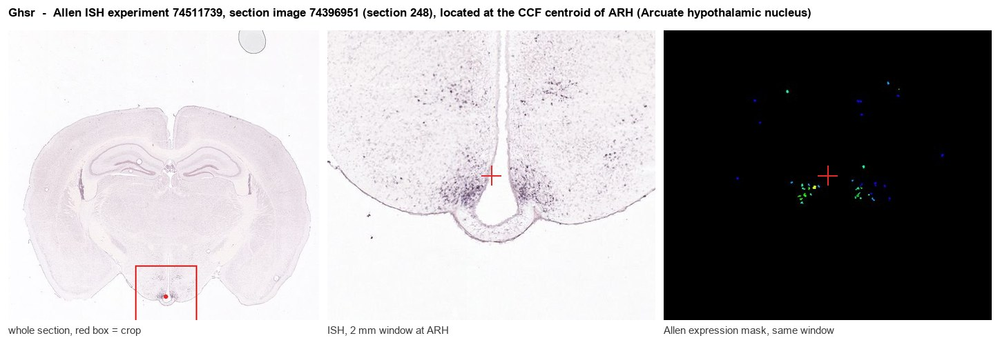

Ghsr
Growth hormone secretagogue receptor type 1 (GH-releasing peptide receptor) (Ghrelin receptor)
Spatial tier: RESTRICTED · Class: GPCR · Top region: ARH (Arcuate hypothalamic nucleus) · Positive regions: 27/554
45.5Discovery Score
38.0Targetability Score
CEvidence grade C
What this means: Ghsr: fine CCF profile is restricted toward ARH (top regions: ARH, RL, VTA, IF, EW; 27 positive regions); direct spatial validation is still required.
Function in ARH: evidence, prediction, innovation
- Gene function
- GHSR is the growth hormone secretagogue receptor, the class A GPCR for the stomach-derived peptide ghrelin. It couples to Gq, shows unusually high constitutive activity, and heterodimerises with dopamine and melanocortin receptors. Ghrelin acting at GHSR drives growth hormone release from the pituitary and stimulates food intake and adiposity.
- Region function
- The arcuate hypothalamic nucleus sits against the median eminence and contains orexigenic AgRP/NPY and anorexigenic POMC neurons plus GHRH and kisspeptin cells; it is the brain's primary interface for leptin, ghrelin and insulin signals controlling feeding, growth and reproduction.
- Published in this region
- direct Direct and extensive. Wang et al. 2014 showed that re-expressing Ghsr selectively in arcuate AgRP neurons of Ghsr-null mice restores ghrelin-induced food intake and normalises blood glucose during caloric restriction, and that AgRP/NPY cells are the main GHSR-expressing arcuate population; ghrelin excites AgRP/NPY but not POMC neurons, and this excitation is lost in Ghsr knockouts. Peris-Sampedro et al. 2021 characterised impaired growth and blunted fasting endocrine responses in Ghsr-IRES-Cre mice.
- Predicted function
- Prediction: the open question is GHSR's cell-autonomous role in arcuate GHRH and kisspeptin neurons rather than AgRP cells, where it is predicted to couple nutritional state to pulsatile growth hormone output and pubertal timing. Selective Ghsr deletion in GHRH neurons should blunt fasting-induced GH pulsatility and slow linear growth with intact feeding responses, while a GHSR inverse agonist delivered to the arcuate should reduce the constitutive tone maintaining GH pulse amplitude.
- Innovation
- ★☆☆☆☆ 1/5 Ghrelin receptor signalling in arcuate AgRP neurons is one of the most thoroughly worked-out gene-region relationships in hypothalamic neuroscience.
- Tools
- Ghsr-IRES-Cre and Ghsr-eGFP mice; Ghsr-null and Ghsr floxed alleles; agonists ghrelin, MK-0677, capromorelin; antagonists and inverse agonists JMV2959, [D-Lys3]-GHRP-6, PF-05190457; Agrp-Cre, Pomc-Cre and Ghrh-Cre for intersectional targeting.
- References
Direct evidence located at the region

Allen ISH experiment 74511739, section image 74396951 (section 248): the section that contains the CCF centroid of Arcuate hypothalamic nucleus according to the Allen image-to-atlas alignment (reference_to_image), with a 2 mm window around that point. Left: whole section, red box = window. Middle: ISH signal. Right: Allen's expression-mask view of the same window. open this image in the Allen viewer
Look it up yourself: Allen Mouse Brain ISH for GhsrAllen reference atlas: ARH (structure 223)ABC Atlas MERFISH viewer(in the ABC Atlas choose dataset MERFISH-C57BL6J-638850-CCF, colour cells by gene "Ghsr" or by parcellation_substructure "ARH")All genes confined to ARH + 3-D brain
Direct spatial evidence
MERFISH REGION LOCATOR

Regional expression figure

Predicted WMB × fine-CCF profile; not direct full-transcriptome spatial measurement.
Spatial profile
Evidence and specificity
- Evidence status
- PREDICTED_FINE
- Direct sources
- None; predicted localization only
- Exclusive threshold
- 12 positive regions out of 554
- Spatial specificity
- 0.324
- Top-region fraction
- 0.055
- Filter status
- PASS
Interpretation limits
- Cell-type-to-region projection is imputed expression, not direct spatial measurement.
- Adult reference atlases do not establish stability across age, sex, strain, state, or disease.
- Transcript abundance does not guarantee protein abundance or genetic-tool performance.